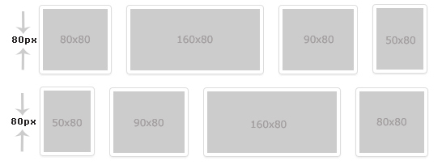
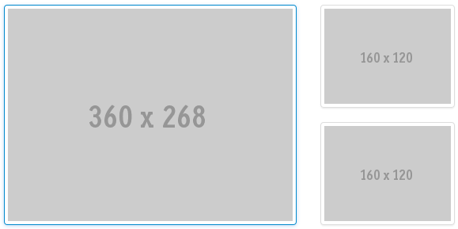
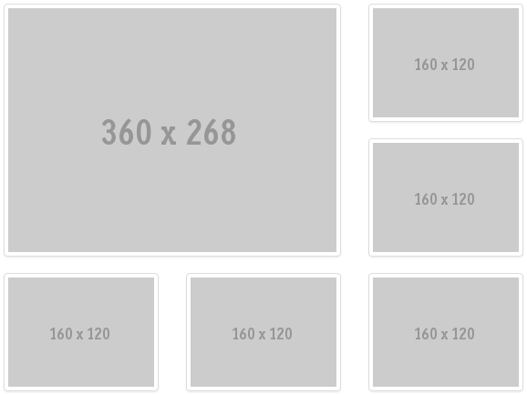

Thumbnails are reduced-size images that make easy to recognize and organise them. Thumbnails can be used to display pictures in a gallery, image attachments, files in a folder, avatars...
Thumbnails are reduced-size images that make easy to recognize and organise them. Thumbnails can be used to display pictures in a gallery, image attachments, files in a folder, avatars...
The user needs to get an overview of multiple pictures without having to download each of the full size images.
Thumbnails can be used to present images in cases:
Thumbnails allows multiple images display at once that provides an overview of image collection and users can select an expected one to view or download with original size. In case images are used for avatar or picture representative, thumbnails defines an ideal and consistent size for all uploaded images.
There are some standard size for thumbnail that can be used for different purpose such as mini avatar, normal avatar, image attachment, thumbnails in gallery …
Square thumbnails sample:
| Size(weightxHeight) | Description |
|---|---|
| 28x28 | Very Small |
| 41x41 | Small |
| 69x69 | Medium |
| 118x118 | Large |
| 160x160 | Extra Large |
Rectangle thumbnails sample:
| Size(weightxHeight) | Description |
|---|---|
| 60x40 | Small |
| 80x60 | Medium |
| 160x120 | Large |
| 260x180 | Extra Large |
| 360x268 | SuperLarge |
Besides, a thumbnails size can be flexible with height fixed, the width is resized correspondent ratio.
A thumbnails can be clicked or non-clickable. In details:
This kind of thumbnail style can be used for image thumbnail in gallery, folder or attachment.
Sample:
| Object | Style |
|---|---|
| Border Size | 1px |
| Border Color | #DDDDDD |
| Border Radius | Extra and Super Large: 4px 4px 4px 4px Large: 3px 3px 3px 3px Medium: 2px 2px 2px 2px Small: 1px 1px 1px 1px |
| Border Hover | Color: #0088CC; box-shadow: 0 1px 4px rgba(0, 105, 214, 0.25); |
This kind of thumbnail style can be used for avatar, profile image...
Sample:
- <img src="..." class="img-rounded">
Depending on the thumbnails size the round size may be different. In details:
| Extra and Super Large | 4px 4px 4px 4px |
| Large | 3px 3px 3px 3px |
| Medium | 2px 2px 2px 2px |
| Small | 1px 1px 1px 1px |
The thumbnails with rounded corners is used for avatar display.
| Size | Sample | Description |
|---|---|---|
| 118x118 |  |
This size can be used for forum, answers, space picture |
| 69x69 | This size can be used for medium avatar usage such as profile gadget. | |
| 41x41 | This size can be used for small avatar usage such as displaying at comment panel of a question, file ... | |
| 28x28 |  |
This size can be used for very small avatar usage such as avatar of like list, avatar of user’s comment... |
The thumbnails with rounded borders can be used for image attachments in a topic, question... the height is fixed 80px, the width is resized automatically based on the original size of images.

The thumbnail with rounded borders can be used to share images on intranet activity stream and news feed.
In case 2 images:
In case 3-5 images:

In case 6 images or more than 6 images

This can be used for images in a folder. The image can be resized until its width or height obtains the maximum of the thumbnails size, the other is resized correspondingly.
The default border size is 64x64px

To obtain the consistency and professionalism of thumbnails usage among products.